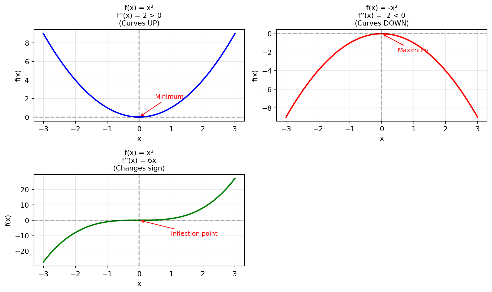

Show code
import numpy as np
import matplotlib.pyplot as plt
from mpl_toolkits.mplot3d import Axes3D
x = np.linspace(-3, 3, 200)
# Three functions with different second derivatives
f1 = x**2 # f''(x) = 2 (positive, curves up)
f2 = -x**2 # f''(x) = -2 (negative, curves down)
f3 = x**3 # f''(x) = 6x (changes sign at x=0)
fig, axes = plt.subplots(2, 2, figsize=(10, 6))
# Function 1: f(x) = x²
axes[0, 0].plot(x, f1, 'b-', linewidth=2)
axes[0, 0].axhline(y=0, color='k', linestyle='--', alpha=0.3)
axes[0, 0].axvline(x=0, color='k', linestyle='--', alpha=0.3)
axes[0, 0].set_title("f(x) = x²\nf''(x) = 2 > 0\n(Curves UP)", fontsize=10)
axes[0, 0].set_xlabel('x')
axes[0, 0].set_ylabel('f(x)')
axes[0, 0].grid(True, alpha=0.3)
axes[0, 0].annotate('Minimum', xy=(0, 0), xytext=(0.5, 2),
arrowprops=dict(arrowstyle='->', color='red'),
fontsize=9, color='red')
# Function 2: f(x) = -x²
axes[0, 1].plot(x, f2, 'r-', linewidth=2)
axes[0, 1].axhline(y=0, color='k', linestyle='--', alpha=0.3)
axes[0, 1].axvline(x=0, color='k', linestyle='--', alpha=0.3)
axes[0, 1].set_title("f(x) = -x²\nf''(x) = -2 < 0\n(Curves DOWN)", fontsize=10)
axes[0, 1].set_xlabel('x')
axes[0, 1].set_ylabel('f(x)')
axes[0, 1].grid(True, alpha=0.3)
axes[0, 1].annotate('Maximum', xy=(0, 0), xytext=(0.5, -2),
arrowprops=dict(arrowstyle='->', color='red'),
fontsize=9, color='red')
# Function 3: f(x) = x³
axes[1, 0].plot(x, f3, 'g-', linewidth=2)
axes[1, 0].axhline(y=0, color='k', linestyle='--', alpha=0.3)
axes[1, 0].axvline(x=0, color='k', linestyle='--', alpha=0.3)
axes[1, 0].set_title("f(x) = x³\nf''(x) = 6x\n(Changes sign)", fontsize=10)
axes[1, 0].set_xlabel('x')
axes[1, 0].set_ylabel('f(x)')
axes[1, 0].grid(True, alpha=0.3)
axes[1, 0].annotate('Inflection point', xy=(0, 0), xytext=(1, -10),
arrowprops=dict(arrowstyle='->', color='red'),
fontsize=9, color='red')
# Hide the unused subplot
axes[1, 1].axis('off')
plt.tight_layout()
plt.show()